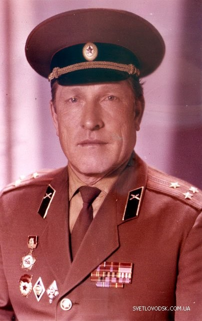
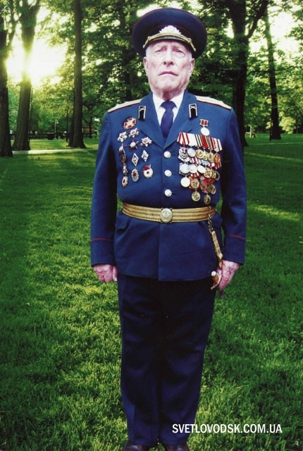

м. Світловодськ, Кіровоградська область
Дослідницько-пошукова робота (2015 рік)
Учнів 10 класу НВК «Гімназія-ЗОШ I-III ступенів №4» м. Світловодська:
Раєвської Вероніки, Луньової Олени
Керівник: вчитель історії — Кобильська Ольга Юріївна


Народився Ілля Михайлович 14 липня 1919 року в селі на хуторі Другий Щотівський у Башкирії у багатодітній родині. Закінчив металургійний технікум у м. Сталіно (Донецьк) за фахом «технік-прокатчик». Життєві плани змінила війна — був направлений на навчання у Горьківське військове училище зенітної артилерії.
З вересня 1942 року — на фронті. Воював у складі 99-го гвардійського мінометного Полоцького полку («Катюші»). Проявив неабияку мужність та героїзм, ліквідовуючи загрози вибухів на позиціях батареї та керуючи точним нищівним вогнем по позиціях ворога. Був нагороджений орденами Червоного Прапора, Червоної Зірки, Вітчизняної війни, Богдана Хмельницького ІІІ ступеня та численними медалями.
З липня 1970 року полковник Ілля Михайлович Доронін прийшов працювати в середню школу №4 вчителем допризивної підготовки юнаків (ДПЮ). На цій посаді він віддав школі 27 років свого життя.
За цей час школа №4 стала зразковою з військово-патріотичного виховання у місті. Його учні традиційно перемагали у військово-спортивних іграх «Зарниця» та «Орлятко». За час його роботи 95 випускників обрали шлях військових, понад десять стали полковниками, а випускник Олександр Фісун здобув звання генерал-майора.
У квітні 2008 року Указом Президента України Іллі Дороніну було присвоєно звання «генерал-майор», а 29 травня 2008 року рішенням Світловодської міської ради йому надано звання «Почесний громадянин міста Світловодська».